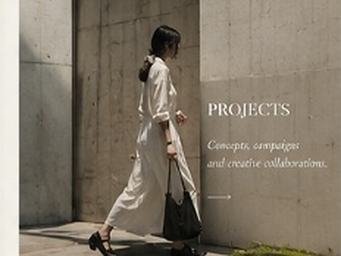
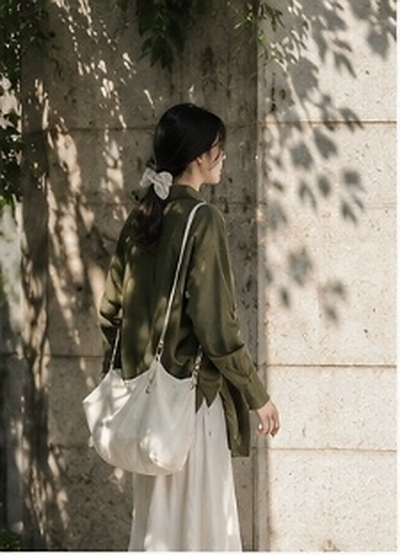
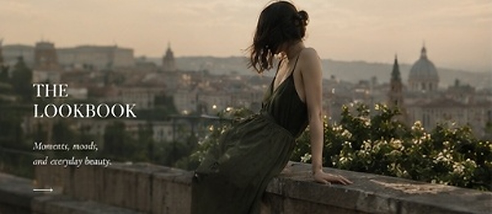
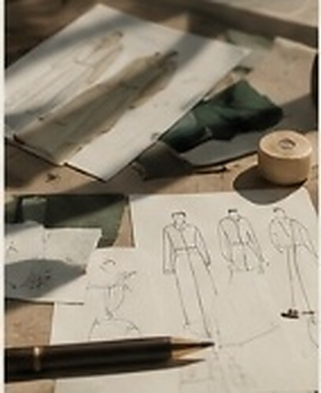

Bóng Đổ Đơn Sắc trong Không Gian Brutalism
Khám phá sự giao thoa thị giác giữa cấu trúc hình học thô ráp của các mảng tường bê tông và sự buông lơi, mềm mại của trang phục linen mộc. Một cuộc đối thoại không lời giữa sự vững chãi của kiến trúc và sự uyển chuyển của cơ thể phụ nữ.
Đội ngũ: Người mẫu Mai Anh • Nhiếp ảnh Thanh Lam Studio • Địa điểm Hà Nội

Giải Phẫu Sợi Dệt Tự Nhiên & Nắng Sớm
Tập hợp các nghiên cứu chuyên sâu về phản quang của thớ vải sợi lanh dưới ánh nắng xiên ban mai. Dự án ghi lại hành trình từ những cuộn chỉ thô mộc tại làng nghề truyền thống đến những form áo sơ mi quá khổ phóng khoáng.
Đội ngũ: Nghệ nhân dệt Tây Bắc • Studio Thanh Lam

Hoàng Hôn Thành Phố Cổ: Nốt Trầm Tĩnh Lặng
Chiến dịch hình ảnh ghi lại nhịp điệu tĩnh lặng của thời khắc hoàng hôn rọi bóng qua những ban công đá hàng trăm năm tuổi. Tôn vinh nét đẹp kín đáo, trầm tĩnh và đầy kiêu hãnh của người phụ nữ trong thiết kế đầm hai dây lụa rêu.
Đội ngũ: Thực hiện độc quyền bởi Studio Thanh Lam

Bản Vẽ Rập như Kiến Trúc Mềm
Bộ lưu trữ quy trình tạo tác thủ công tại xưởng may: Hơn 120 bản rập giấy nâu, hàng chục mẫu thử nghiệm trên vải mộc toan, và quá trình tinh chỉnh từng góc xẻ vạt áo để đảm bảo chuyển động tự do nhất khi di chuyển.
Đội ngũ: Lưu trữ tại Xưởng may Thanh Lam Atelier